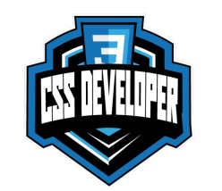

TRILHA DE CSS DA DIO
A nova Trilha de CSS da DIO está disponível. Acesse já e aprenda do zero como desenvoler sites profissionais
QUERO ME INSCREVERO QUE VOU APRENDER?
Temos 3 módulos recheados de conteúdos do básico ao avançado para que você aprenda a desenvolver sites profissionais utilizando somente HTML e CSS: sem nenhuma biblioteca ou framework a mais.
Módulo 01: primeiros passos com CSS Módulo 02: trabalhando com layouts no CSS Módulo 03: refinando os estilos CSS das nossas páginasS
transforme o mundo com a gente
EVOLUA E ENCARE NOVOS DESAFIOS PROFISSIONAIS
Junte-se ao nosso ecossistema e transforme o mundo com a gente! Todos os dias dezenas de empresas acessam a nossa plataforma em busca dos talentos mais criativos, dinâmicos e colaborativos, além do conhecimento técnico. A nossa missão é te preparar para que você conecte-se com as melhores oportunidades.